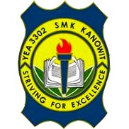

SIJIL PELAJARAN MALAYSIA
School Name : Sekolah Menengah Kebangsaan Kanowit
Adress : Jalan Durin Kanowit Sibu 96700
Info Contact : 084752152
Info Email : yea3302@1bestarinet.yes.my
Class Program : Science Social
Since 2015 - 2019
SIJIL TINGGI PELAJARAN MALAYSIA
School Name : Sekolah Menengah Kebangsaan Kanowit
Adress : Jalan Durin Kanowit Sibu 96700
Info Contact : 084752152
Info Email : yea3302@1bestarinet.yes.my
Class Program : Literary
Since 2020 - 2022
BACHELOR DEGREE
School Name : Universiti Teknologi Mara
Adress : Jalan Meranek, 94300 Kota Samarahan, Sarawak
Info Contact : +6082-677 200 / +6082-677 500
Info Email : korporat_swk@uitm.edu.my
Course Program : - Bachelor In Office Systems Management (HONS.)
Since 2013 - 2026